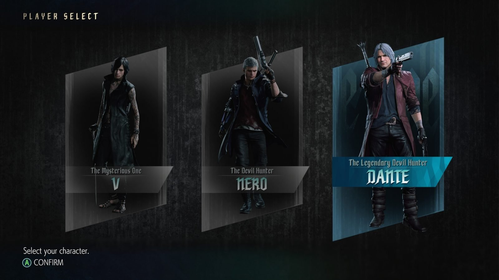
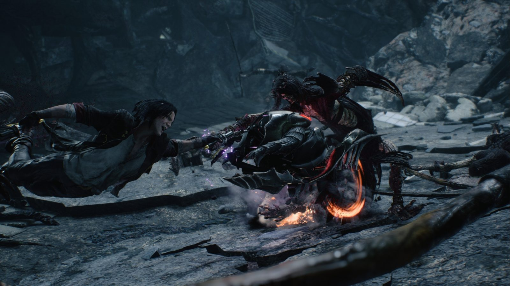

11 tahun bukanlah waktu yang singkat, dalam 11 tahun, seorang anak bisa terlahir dan mengalami proses, mulai dari berjalan, berlari, membaca, belajar, hingga menamatkan masa SDnya. 11 tahun bisa digunakan seorang pejabat untuk menjabat selama 2 periode berturut-turut di belahan negara tertentu. 11 tahun juga bisa jadi waktu penantian panjang akan rilisnya sebuah sequel yang paling dinanti, sebuah sequel yang akhirnya menyandang huruf “V” atau angka “5” dibelakangnya.
Kami masih mengingat teriakan para fans yang bergemuruh ketika akhirnya Capcom Mengumumkan Devil May Cry V untuk pertama kali pada ajang E3 di tahun lalu. Teriakan bahagia dimana akhirnya, Capcom memberikan sebuah kepastian akan sebuah sequel yang telah lama dinantikan oleh para fans. Setelah menunggu 11 tahun lamanya sejak seri keempatnya dirilis, kini akhirnya Devil May Cry V telah berada dalam genggaman. Sebuah sequel manis yang digarap dengan sepenuh hati dari keringat dan perjuangan keras para talenta dibalik layar Capcom.
Beberapa tahun kebelakang sepak terjang Capcom terbukti sangat luar biasa, dan dengan keberhasilan Devil May Cry V ini membuat reputasi Capcom semakin berada diatas angin. Beragam perombakan & peningkatan yang mereka suguhkan dalam game ambisiusnya yang satu ini terbukti terasa matang dan mampu menghadirkan sebuah pengalaman game hack & slash di level yang lebih tinggi.
Storyline
Melanjutkan keempat seri sebelumnya, kini Dante dan para crew Devil May Cry lainnya akan dihadapkan dengan sebuah ancaman baru yang tak pernah diduga sebelumnya. Suatu ketika seorang pemuda misterius berjuluk “V” menawarkan sebuah tawaran pekerjaan yang tak dapat ditolak Dante, yaitu menghabisi sosok iblis kuat yang masih memiliki ikatan darah dengannya – Urizen.

Dilain sisi, Nero yang tengah menjalani hidup tenangnya dengan sang kekasih – Kyrie, terancam ketika seorang pria misterius datang untuk mengambil Yamato yang berada dalam (tangan) Devil Bringer Nero. Tak terima dengan apa yang dialaminya, Nero coba menuntut balas pada pria yang merenggut tangannya tersebut. Namun tanpa disangka, ditengah perjalanan ia malah menemukan para crew Devil May Cry yang telah tergeletak tak berdaya melawan Urizen, termasuk Dante diantaranya.
Melihat Dante yang telah tergeletak tersebut, akhirnya Nero memutuskan untuk melawan Urizen, namun sayang kekuatannya masih tak mampu mengimbangi sang raja iblis tersebut. Terpojok, ia akhirnya bertemu dengan V yang juga menjelaskan bahwa Urizen adalah sosok iblis yang memotong Devil Bringernya.
Melihat V & Nero yang tengah terpojok, Dante bangkit dan memaksa mereka berdua kabur, sementara Dante berusaha menahan Urizen sebisa dan selama mungkin sembari mengumpulkan kekuatan baru. Perjuangan “paman” Dante dan keponakannya – Nero kali ini tak hanya dihadapkan pada polemik keselamatan dunia semata, namun juga intrik didalam keluarga mereka.
Lantas, mampukah Nero & V memperoleh kekuatan yang diperlukan untuk mengalahkan Urizen? akan seperti apa nasib Dante di seri kali ini? Lalu, siapakah sebenarnya sosok misterius “V”? dan siapa sebenarnya sosok Urizen yang dikatakan memiliki keterkaitan dengan Dante & Nero? Dan apakah berbagai rumor yang sempat beredar sebelumnya akan jadi kenyataan? kesemua pertanyaan tersebut akan terjawab dengan memainkan Devil May Cry V ini!
Gameplay
SSS (Sangat Segar Sekali!)
Sebagai sebuah game hack & slash, tentu gameplay menjadi salah satu elemen paling krusial dalam Devil May Cry V. Dalam aspek tersebut, kami tak segan untuk mengacungkan 2 jempol kepada Capcom, mereka terbukti mampu menghadirkan elemen hack & slash yang terasa sangat solid.
Secara garis besar, Devil May Cry V memang masih terasa seperti keempat seri sebelumnya, dimana kalian dihadapkan pada beragam stage linear untuk diselesaikan. Mekanisme elemen hack & slash khas seri-seri sebelumnya juga tetap dipertahankan dan tak kehilangan esensinya. Kalian masih akan dihadapkan dengan irama pertarungan cepat dengan rank yang terus bermunculan tergantung seberapa ahli kalian merangkai untaian combo yang ada.
Namun tentunya aspek krusial tersebut kini mengalami beragam perombakan & peningkatan yang cukup signifikan. Kali ini , Capcom benar-benar berhasil menghadirkan sensasi hack & slash yang terasa lebih brutal, elegan, fresh, & kompleks, namun tetap terasa familiar dengan seri-seri terdahulu. Kini tiap tebasan pertarungan terasa lebih brutal & memuaskan, tiap akhir pertarungan selalu dibarengi dengan efek slow motion brutal yang tentunya sedikit mengingatkan kita akan Devil may Cry racikan Ninja Theory.
Kini kalian akan dapat mengakses 3 playable character di tiap stage tertentu, yaitu Nero, V, & Dante, tiap karakter ini memiliki gaya bertarungnya masing-masing dan harus dikuasai dengan cara yang berbeda-beda. Bagi kalian yang sempat memainkan keempat seri sebelumnya, tentu tak akan terlalu dipusingkan dengan dengan gaya pertarungan Dante.

Variasi gaya bertarungnya, trickster, royalguard, gunslinger, & swordmaster kembali lagi kedalam seri ini, bagi kalian yang tak familiar, keempat gaya tersebut memungkinkan Dante untuk bertarung secara fleksible. Trickster untuk gaya bertarung dengan kelincahan, royalguard untuk gaya bertarung defensif, gunslinger untuk pertarungan jarah jauh, & swordmaster untuk pertarungan jarak dekat.
Keempat gaya bertarung tersebut miliki kelebihan & kekurangannya masing-masing dan dapat diganti secara instan di tengah pertarungan. Kali ini Dante juga masih dibekali dengan beragam senjata unik baru yang bisa diubah disepanjang pertarungan. Sayangnya karena faktor keterbatasan tombol, pergantian senjata yang ada terasa tak efisien dan hanya bisa diganti menuju satu arah saja.
Dante juga masih dibekali dengan kekuatan Devil Triggernya yang dapat diakses melalui bar khusus berwarna ungu. Tentunya aktivasi Devil Trigger tersebut tak hanya meningkatkan damage, namun juga memacu Dante untuk melancarakan beragam combo yang lebih brutal lagi. Masih kurang? kini ia memiliki mode perubahan pamungkasnya – Sin Devil Trigger – mode terkuat Devil Trigger yang dapat diakses melalui sebuah bar berwarna merah.
Conclusion
Devil May Cry V merupakan sebuah jawaban akan penantian panjang para fans, 11 tahun menunggu, akhirnya seri kelima ini telah berada dalam genggaman dan mampu penuhi beragam ekspetasi. Kerja keras para talenta bertangan dingin Capcom dibalik game ambisiusnya yang satu ini terbayar dengan sangat manis. Peningkatan & perombakan yang mereka lakukan mampu mendorong franchise Devil May Cry kembali menuju puncaknya.

Kami juga cukup yakin bahwa eksistensi Devil May Cry V kian mendorong genre hack & slash berada di level yang jauh lebih tinggi lagi. Namun walaupun demikian, kami tetap tak mampu mengatakan bahwa Devil May Cry V merupakan sebuah game yang seutuhnya sempurna. Ada beberapa kekurangan yang tak bisa diabaikan begitu saja, beberapa mekanisme gameplaynya masih memiliki kekurangan didalamnya, fitur coop yang dihadirkan juga terasa sangat tanggung.
Dari segi cerita, memang mampu menjawab rasa penasaran para fans akan beragam rumor yang telah beredar selama ini. Namun cukup disayangkan bahwa, masih ada banyak lubang & hal yang tak dijelaskan dan membuat banyak pertanyaan baru disana sini. Disamping itu semua, Devil May Cry V tetaplah sebuah game hack & slash revolusioner yang harus kalian mainkan sendiri. Terlebih lagi bila kalian merupakan fans lawas Devil May Cry, kalian akan merasakan sebuah seri Devil May Cry yang berbeda, namun tetap terasa familiar.